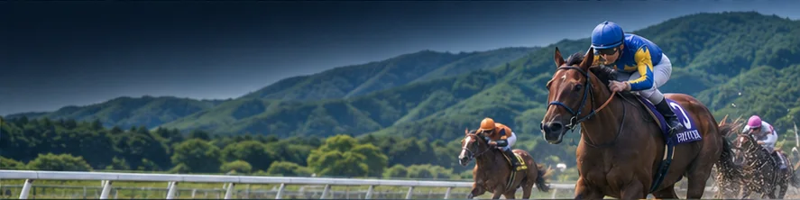
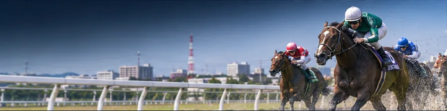
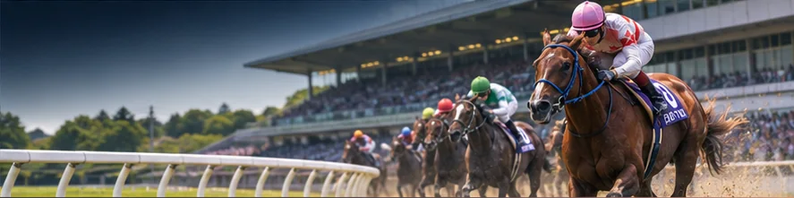

統馬式 ピックアップ3選
掲載レース：大井11R・笠松10R・園田11R
記事価格：999円
公開：08:45 JST
各方式で厳選した3レースを、展開予想と本命・相手の見解、具体的な買い目まで。
統馬式（データ派）999円 ／ 明翔式（バランス派）888円 ／ 馬究式（総合精査）1,389円
掲載レース：大井11R・笠松10R・園田11R
記事価格：999円
公開：08:45 JST
掲載レース：園田11R・浦和11R・名古屋8R
記事価格：888円
公開：08:08 JST
本編：笠松3R・笠松10R・大井4R
参考：園田8R・大井12R
記事価格：1,389円
公開：08:28 JST
取消・変更は公式情報をご確認ください。方式間で対象・内容の重複があります。
各方式の独立した研究・参考予想です。価格・収録内容はnoteでご確認ください。
北海道から九州まで。各エリアの競馬場をまとめました。エリアごとに予想・考察・結果検証をお届けします。



予想ごとの券種と考え方を明確にしています。公開中の有料記事はnoteでご覧いただけます。
3着以内の組み合わせを読む。
11/17 馬究式｜三連複・本編3R＋参考2R馬究式の第2表（合算1位と2位の点差）から、軸の固いレースを選ぶ。点差が大きいほど軸の信頼度が高く、◎1頭の単勝・複勝と相手への流しが中心です。
記事を準備中軸と相手の組み合わせを選ぶ。
統馬式3選｜ワイド・馬連明翔式3選｜馬連着順を想定した組み立て。
記事を準備中逆転の条件がある馬を探す。
11/17 玄馬の穴監査｜水沢8R・金沢8R（777円）調教内容を根拠に評価。
記事を準備中予想、結果検証、競馬の読み方を無料でお届けします。発走後の記事は事前予想と区別して掲載します。
11月24日 水沢・浦和・名古屋 全36R（照合34R）の結果検証。明翔式◎9勝／34R・統馬式◎7勝／34R・馬究式（60点合算）首位8勝／33R。回収率も含めて無料で公開しています。
無料で読む →11月23日 6場69Rのうち30点照合53R中心の暫定検証。明翔式◎14勝／52R・統馬式◎8勝／53R・馬究式（60点合算）首位14勝／52R。回収率も含めて無料で公開しています。
無料で読む →11月22日 6場70Rのうち確認済み対象R限定の暫定検証。明翔式◎3勝／18R・統馬式◎12勝／52R・馬究式（60点合算）首位3勝／17R。回収率も含めて無料で公開しています。
無料で読む →11月21日 京都・福島 中央20R限定の暫定検証（共通19R）。明翔式◎5勝・統馬式◎4勝・馬究式（60点合算）首位5勝。回収率も含めて無料で公開しています。
無料で読む →11月20日 大井・笠松・園田 全36Rの結果検証。明翔式◎9勝・統馬式◎10勝・馬究式（60点合算）首位7勝。回収率も含めて無料で公開しています。
無料で読む →本日の重賞の印（◎○▲☆）と軽い見解を無料公開。紐・穴馬・買い目の全文はnote単独記事（398円）へ。
無料で読む →軸の失敗と相手漏れを分けて点検。昨日の結果から、今日確認すべき条件を整理します。
無料で読む →馬究の運営と掲載方針を統括。
レース全体の比較と展開、買い方を考察。
門別競馬の予想と結果検証を担当。
データの整理・比較と検証を担当。
人気の盲点と逆転の条件を探る、穴馬の監査を担当。
高知競馬のファイナルレース専用精査を担当。
note記事の発売案内と成績報告をLINEでお届けします。参加は無料、LINEの友だち追加も不要です。予想の全文はnoteで公開しています。
QRコードからも参加できます。チャット内では予想本文の公開は行いません。